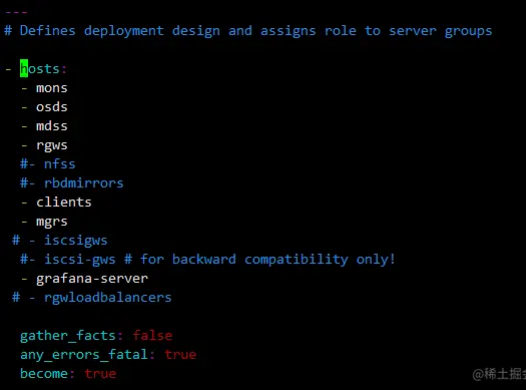

Ansible部署ceph集群
基础配置
三台环境为centos7.9，以下配置需要在每台机器上执行
配置hosts解析
cat >> /etc/hosts <<EOF
192.168.2.23 node1
192.168.2.24 node2
192.168.2.25 node3
EOF
关闭防火墙和selinux
systemctl stop firewalld && systemctl disable firewalld
setenforce 0 && sed -i 's/SELINUX=enforcing/SELINUX=disabled/g' /etc/selinux/config
分别在三个节点设置主机名
hostnamectl set-hostname node1
hostnamectl set-hostname node2
hostnamectl set-hostname node3
配置主机时间同步
systemctl restart chronyd.service && systemctl enable chronyd.service
配置免密登录
ssh-keygen
ssh-copy-id -i .ssh/id_rsa.pub node1
ssh-copy-id -i .ssh/id_rsa.pub node2
ssh-copy-id -i .ssh/id_rsa.pub node3
安装pip和ansible、git
yum install python-pip ansible git -y
部署ceph集群
克隆存储库
这里我选择安装的是ceph nautilus版本
git clone https://github.com/ceph/ceph-ansible.git
cd ceph-ansible
git checkout stable-4.0
安装ansible依赖包
pip install --upgrade pip
pip install -r requirements.txt
修改hosts文件，添加安装的节点
cat >> /etc/ansible/hosts <<EOF
[mons]
node1
node2
node3
[osds]
node1
node2
node3
[mgrs]
node1
[mdss]
node1
node2
node3
[clients]
node1
node2
node3
[rgws]
node1
node2
node3
[grafana-server]
node1
EOF
备份group_vars下的yml文件
cd ceph-ansible/group_vars
for file in *;do cp $file ${file%.*};done
修改group_vars/all.yml配置
---
dummy:
mon_group_name: mons
osd_group_name: osds
rgw_group_name: rgws
mds_group_name: mdss
client_group_name: clients
mgr_group_name: mgrs
grafana_server_group_name: grafana-server
configure_firewall: False
ceph_origin: repository
ceph_origin: repository
ceph_repository: community
ceph_mirror: http://mirrors.aliyun.com/ceph
ceph_stable_key: http://mirrors.aliyun.com/ceph/keys/release.asc
ceph_stable_release: nautilus
ceph_stable_repo: "{{ ceph_mirror }}/rpm-{{ ceph_stable_release }}"
public_network: "192.168.2.0/24"
cluster_network: "192.168.2.0/24"
monitor_interface: ens33
osd_auto_discovery: true
osd_objectstore: filestore
radosgw_interface: ens33
dashboard_admin_password: asd123456
grafana_admin_password: admin
pg_autoscale_mode: True
修改group_vars/osds.yml配置
devices:
- /dev/sdb
修改site.yml配置

开始进行安装
剩下的交给时间吧，十分钟左右就装好了
ansible-playbook -i /etc/ansible/hosts site.yml
查看安装状态，发现有一个警告，这是因为在之前的all.yml配置没有开启允许自动调整pool中的pg数 pg_autoscale_mode: False ，手动设置下即可
ceph osd pool set <pool-name> pg_autoscale_mode on